This approach stems from a particular insight into the creation of web pages, that there are two primary kinds of web pages useful as results for broad-topic searches. By a broad topic search we mean an informational query such as "I wish to learn about leukemia". There are authoritative sources of information on the topic; in this case, the National Cancer Institute's page on leukemia would be such a page. We will call such pages authorities; in the computation we are about to describe, they are the pages that will emerge with high authority scores.
On the other hand, there are many pages on the Web that are hand-compiled lists of links to authoritative web pages on a specific topic. These hub pages are not in themselves authoritative sources of topic-specific information, but rather compilations that someone with an interest in the topic has spent time putting together. The approach we will take, then, is to use these hub pages to discover the authority pages. In the computation we now develop, these hub pages are the pages that will emerge with high hub scores.
A good hub page is one that points to many good authorities; a good authority page is one that is pointed to by many good hub pages. We thus appear to have a circular definition of hubs and authorities; we will turn this into an iterative computation. Suppose that we have a subset of the web containing good hub and authority pages, together with the hyperlinks amongst them. We will iteratively compute a hub score and an authority score for every web page in this subset, deferring the discussion of how we pick this subset until Section 21.3.1 .
For a web page  in our subset of the web, we use
in our subset of the web, we use  to denote its hub score and
to denote its hub score and  its authority score. Initially, we set 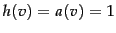 for all nodes
its authority score. Initially, we set 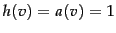 for all nodes  . We also denote by 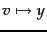 the existence of a hyperlink from
. We also denote by 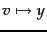 the existence of a hyperlink from  to
to  . The core of the iterative algorithm is a pair of updates to the hub and authority scores of all pages given by Equation 262, which capture the intuitive notions that good hubs point to good authorities and that good authorities are pointed to by good hubs.
. The core of the iterative algorithm is a pair of updates to the hub and authority scores of all pages given by Equation 262, which capture the intuitive notions that good hubs point to good authorities and that good authorities are pointed to by good hubs.
What happens as we perform these updates iteratively, recomputing hub scores, then new authority scores based on the recomputed hub scores, and so on? Let us recast the equations Equation 262 into matrix-vector form. Let  and
and  denote the vectors of all hub and all authority scores respectively, for the pages in our subset of the web graph. Let
denote the vectors of all hub and all authority scores respectively, for the pages in our subset of the web graph. Let  denote the adjacency matrix of the subset of the web graph that we are dealing with:
denote the adjacency matrix of the subset of the web graph that we are dealing with:  is a square matrix with one row and one column for each page in the subset. The entry 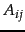 is 1 if there is a hyperlink from page
is a square matrix with one row and one column for each page in the subset. The entry 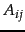 is 1 if there is a hyperlink from page  to page , and 0 otherwise. Then, we may write Equation 262
to page , and 0 otherwise. Then, we may write Equation 262
This leads to some key consequences:
The resulting computation thus takes the following form:
Worked example. Assuming the query jaguar and double-weighting of links whose anchors contain the query word, the matrix  for Figure 21.4 is as follows:
for Figure 21.4 is as follows:
| 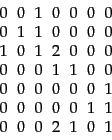 | (270) |
The hub and authority vectors are:
| 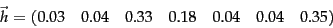 | (271) |
| (272) |
Here, 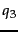 is the main authority - two hubs ( and 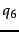) are pointing to it via highly weighted jaguar links.
and 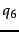) are pointing to it via highly weighted jaguar links.
End worked example.
Since the iterative updates captured the intuition of good hubs and good authorities, the high-scoring pages we output would give us good hubs and authorities from the target subset of web pages. In Section 21.3.1 we describe the remaining detail: how do we gather a target subset of web pages around a topic such as leukemia?